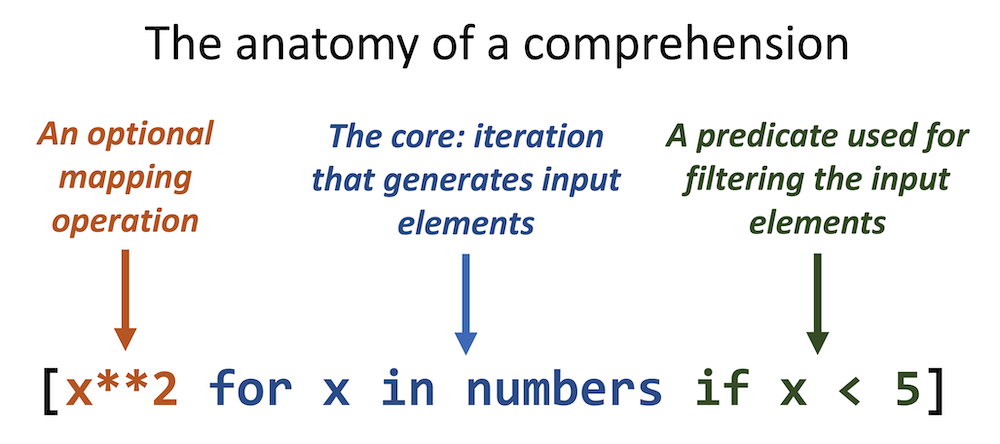

Comprehensions#
filtering and mapping#
In the previous chapter there was a section on filter() and map(). These functions represent processes that are present in a majority of data processing activities.
For convenience, the concepts are repeated here:

What are comprehensions?#
Comprehensions are shorthand syntactic structures that can be used to generate, filter and map different types of collections:
list comprehensions generate lists using
[]tuple comprehensions generate tuples using the
tuple()constructorset comprehensions generate sets using
{}with single valuesdict comprehensions generate dictionaries using
{}with key-value combinationsgenerator comprehensions are used to generate values on demand using
()
Are these essential to Python programming?#
Comprehensions have superseded the use of the map() and filter() functions, and are very popular constructs of the language.
However, some beginning programmers feel awkward using them. So remember, if you feel ill at ease with these, you can always implement any comprehension using regular flow control elements such as for and if structures, or fall back to the use of map() and filter()
List comprehensions#
The most-used type of comprehension is list comprehension, or listcomp in short.
Let’s implement both examples from the picture using these.
numbers = [9, 1, 5, 4, 8, 3, 2, 1, 4]
#map
print([x**2 for x in numbers])
#filter
print([x for x in numbers if x < 5])
[81, 1, 25, 16, 64, 9, 4, 1, 16]
[1, 4, 3, 2, 1, 4]
# using plain Python
#map
result = list()
for x in numbers:
result.append(x**2)
print(result)
#filter
result = list()
for x in numbers:
if x < 5:
result.append(x)
print(result)
[81, 1, 25, 16, 64, 9, 4, 1, 16]
[1, 4, 3, 2, 1, 4]

The above example shows a list comprehension. However, this general structure applies to all comprehension types. All comprehension have an iteration at their core that generate data elements. These data elements can be filtered using a predicate, and optionally be mapped -to multiple values if so required- to the resulting values that end up in the final collection.
if else shorthand in the mapping#
The mapping operation itself can also contain flow control using if else shorthand, as in the example below
data = [4, 2, 'a', 'c', 6, True]
[x**2 if type(x) == 'int' else x * 2 for x in data]
[8, 4, 'aa', 'cc', 12, 2]
Nested comprehensions#
Comprehensions can be nested to create complex combinations and datastructures.
Note that when you think the code gets unclear it is time to simplify things and switch back to regular flow control.
A = [3, 2, 5]
B = ['c', 'e']
print([str(a) + b for a in A for b in B])
print([[a, b] for a in A for b in B])
['3c', '3e', '2c', '2e', '5c', '5e']
[[3, 'c'], [3, 'e'], [2, 'c'], [2, 'e'], [5, 'c'], [5, 'e']]
Besides generating nested structures, they can also be used to filter and process nested stuctures. For instance, given this list of x-y-z coordinates:
xyz_coordinates = [(4, 8, 1), (9, 2, -3), (2, -5, 4), (5, -7, -5)]
#filter for coordinates that are negative
print([coord for xyz in xyz_coordinates for coord in xyz if coord < 0])
#filter for xyz combinations where any coordinate is negative
print([f'{x}/{y}/{z}' for (x, y, z) in xyz_coordinates if x < 0 or y < 0 or z < 0])
[-3, -5, -7, -5]
['9/2/-3', '2/-5/4', '5/-7/-5']
Some more examples#
Below are some additional examples to give you a general idea of the possibilities.
import math
numbers = [9, 1, 5, 4, 8, 3, 2, 1, 4]
# a list of tuples: the square root (rounded) and square of each number
[(round(math.sqrt(n), 2), n**2) for n in numbers]
[(3.0, 81),
(1.0, 1),
(2.24, 25),
(2.0, 16),
(2.83, 64),
(1.73, 9),
(1.41, 4),
(1.0, 1),
(2.0, 16)]
numbers = [9, -1, 5, 4, -8, 3, 2, 1, 4]
NaN = float("NaN") # create a NaN variable
# a list of tuples: the square root (rounded) and square of each number if number is positive else a NaN
[(math.sqrt(n), n**2) if n > 0 else (NaN, n**2) for n in numbers]
[(3.0, 81),
(nan, 1),
(2.23606797749979, 25),
(2.0, 16),
(nan, 64),
(1.7320508075688772, 9),
(1.4142135623730951, 4),
(1.0, 1),
(2.0, 16)]
numbers = [9, -1, 5, 4, -8, 3, 2, 1, 4]
# only when n is positive
[n**0.5 for n in numbers if n >= 0]
[3.0, 2.23606797749979, 2.0, 1.7320508075688772, 1.4142135623730951, 1.0, 2.0]
dict comprehensions#
Dict comprehensions are different because they need to produce key-value pairs in the form of key: value.
{x: chr(x) for x in range(110, 120)}
{110: 'n',
111: 'o',
112: 'p',
113: 'q',
114: 'r',
115: 's',
116: 't',
117: 'u',
118: 'v',
119: 'w'}
Other comprehensions#
Set comprehensions look a lot like dict comprehensions but they have no key: value pairs.
Tuples are created using the tuple constructor.
Generator expressions generate values that can be used to feed other collections, or iterate the values.
Other that the embracing symbols they work the same as lists.
#set with {}
print({x % 2 for x in range(10)})
#tuple with tuple()
print(tuple(x.upper() for x in 'happy'))
#generator with ()
gen = (x % 2 for x in range(10))
print(gen)
print(frozenset(gen))
{0, 1}
('H', 'A', 'P', 'P', 'Y')
<generator object <genexpr> at 0x105ae1970>
frozenset({0, 1})